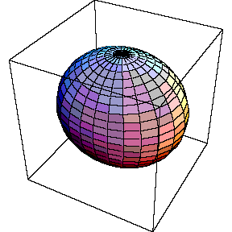
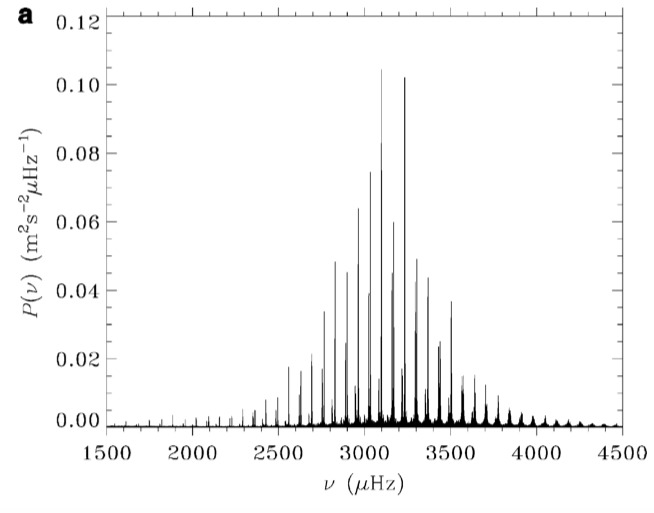
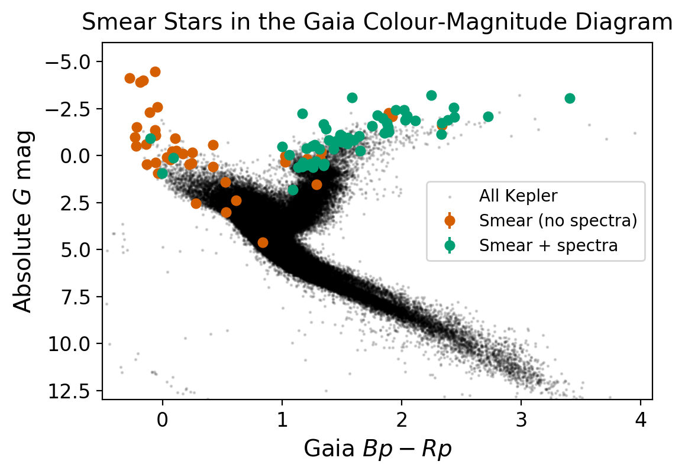
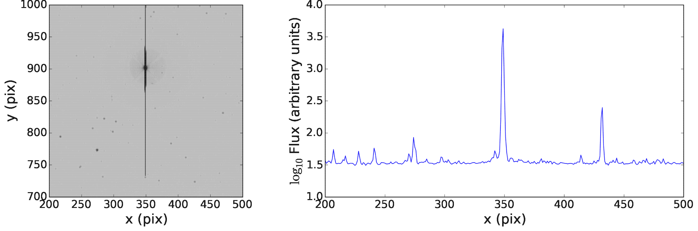
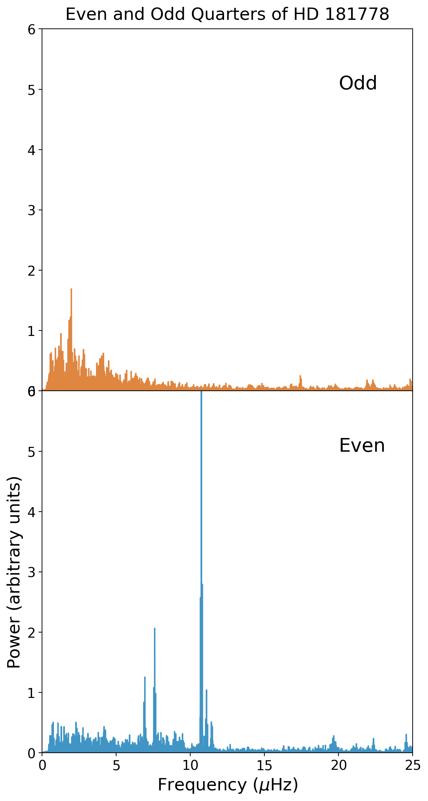
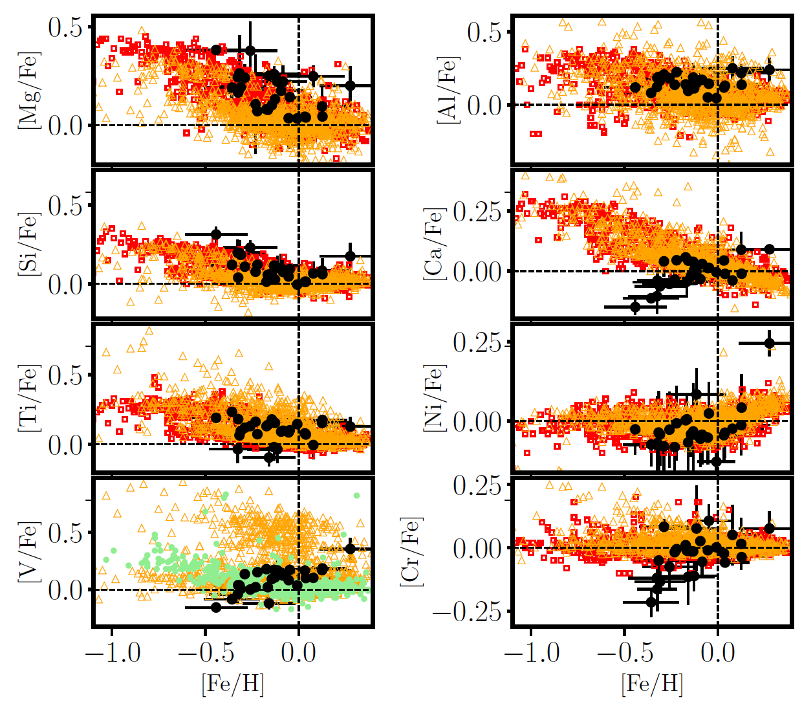
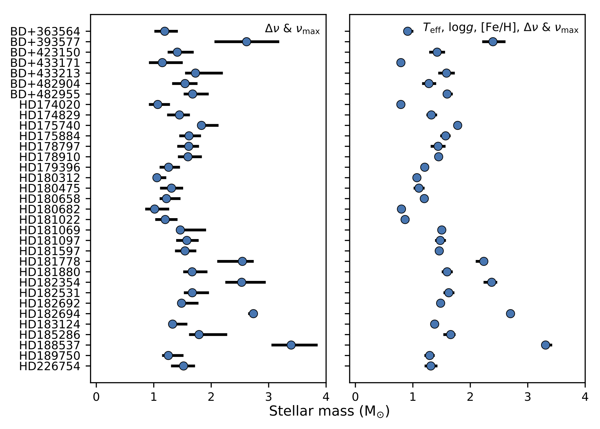
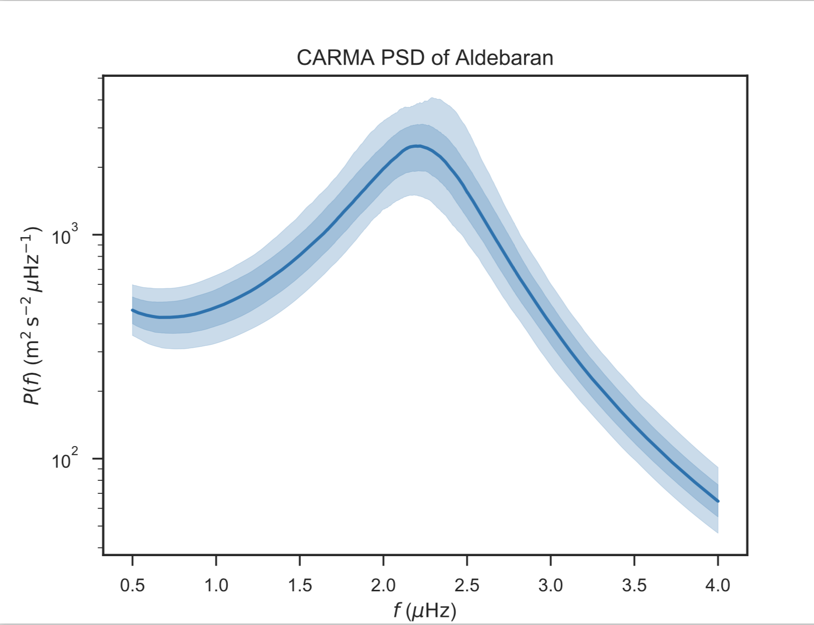
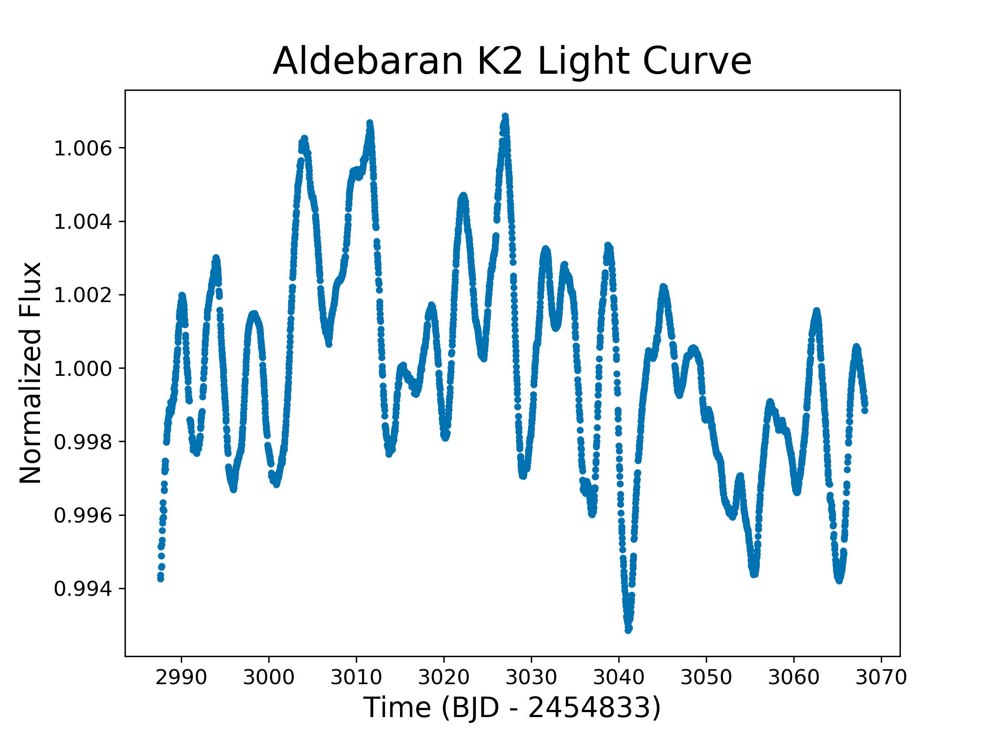

The Brightest Stars in Kepler
Benjamin Pope
NASA Sagan Fellow, NYU
DIRAC Seminar
benjaminpope.github.io/talks/smear/smear
Transiting Planets
Exoplanet-style transit light curve of Venus from James Gilbert on Vimeo.
The best options are those around bright stars, like 55 Cancri e - subject of 367 papers in the last decade!
Asteroseismology

Their frequencies tell us about stellar interior structure.
Power spectrum of the Sun's 5-minute oscillations
Kepler Photometry
but the pixels have different gains ("inter- and intra-pixel sensitivity variation")...
and the pixel window doesn't necessarily track the whole PSF perfectly ("aperture losses").
CCD Smear
To calibrate this 'smear' the Kepler detectors have two smear registers not exposed to light

102 KIC targets with Kp < 9 were untargeted or significantly undertargeted during Kepler - mostly giants and hot stars.
The smear data give you a 1D projection of flux in the whole module - including untargeted bright stars
There can be contamination for multiple sources in the same column
We find no transiting planets, but detect one new eclipsing binary
We detect solar-like oscillations in 33 red giants
We detect classical variability in 26 BAF stars...
including five 'hump and spike' Rossby mode detections
With TRES spectra from Dave Latham and Allyson Bieryla and asteroseismic constraints we measure abundances for the giants
Consistent with Galactic disk pop
Using the asteroseismology and spectroscopy we measure the giants' masses
This new sample of asteroseismic + spectroscopic benchmark stars doubles those available from the Gaia-ESO survey
Halo Photometry
\[ f_i \equiv \sum\limits_i w_j p_{ij} \]
\[\begin{align} TV \equiv \dfrac{\sum_i |f_i - f_{i-1}|} {\sum_i f_i } \end{align} \]
This is the L1 norm or 'taxicab metric' on the derivative of the time series.
This has analytic derivatives you can compute with autograd - easy to optimize.
But they're sparse in the Fourier domain... perhaps this is relevant?
Pleiades
Πλειάδες, the Seven Sisters
Alcyone, Atlas (dad), Electra, Maia, Merope, Taygeta, Pleione (mum)

Atlas lightcurve: raw (top) and halo (bottom)


Lightcurves of All Seven Bright Pleiades
I am currently searching all bright stars in K2 for transiting planets - none so far, but plenty of asteroseismology!
Aldebaran
α Tauri
الدبران ,the follower
... follows the Pleiades!
A Gaussian Process reanalysis of this data by Will Farr detects p-mode acoustic oscillations at 2.2 μHz - can we confirm this with K2?
Yes! We get the same frequency with K2!
\[M = 1.27^{+0.24}_{-0.20} \, \mathrm{M_{\odot}}\] and age \(4.9^{+3.6}_{-2.0} \, \rm Gyr \)
\[M = 1.16^{+0.07}_{-0.07} \, \mathrm{M_{\odot}}\] and age \(6.4^{+1.4}_{-1.1} \, \rm Gyr \)
Using MESA models, we find that on the main sequence Aldebaran b had a semi-major axis of \(1.50 \pm 0.03 \) AU and Aldebaran had a luminosity \(2.0 \pm 0.7 \, L_\odot \)...
so Aldebaran b had an insolation comparable to Earth when its star was on the main sequence.
The Future
We have many K2 halo datasets and are working our way through them - between these missions we should cover the whole sky.
Let's collaborate!